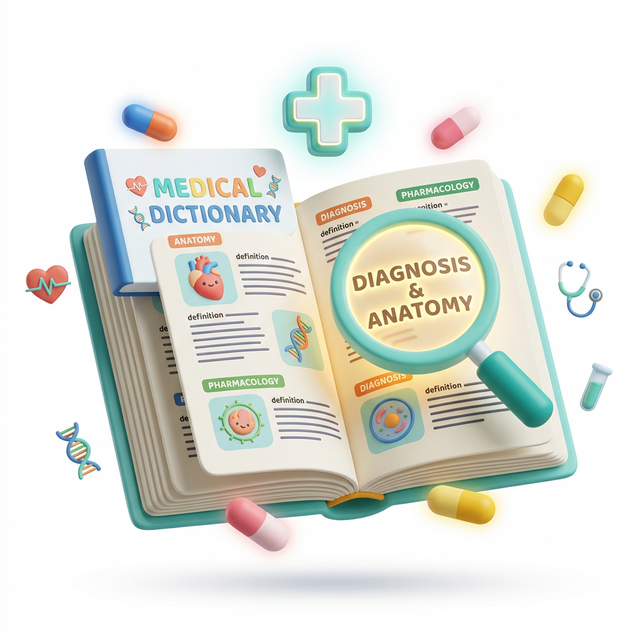

AIutoDoc è un sistema di supporto che si basa sull'utilizzo dell'intelligenza artificiale per lo scopo più umano che ci sia: la cura.
AiutoDoc non fornisce diagnosi, prescrizioni o pareri medici e non sostituisce una visita sanitaria.
In caso di urgenza, sintomi gravi o peggioramento improvviso, chiama il 112/118 o rivolgiti al Pronto Soccorso.
Perché AIutoDoc?
AIutoDoc nasce per rendere più semplice l'orientamento sanitario. Raccoglie poche informazioni per restituire una risposta coerente con le tue necessità, supportandoti nella ricerca di professionisti e strutture sanitarie.
Le informazioni che fornisci vengono sempre trattate in modo sicuro e al solo fine di individuare la categoria specialistica più pertinente. Per maggiori dettagli consulta la nostra Privacy Policy.
Il problema delle liste d'attesa
Molte delle lunghe attese nel Servizio Sanitario Regionale (SSR) dipendono da richieste indirizzate verso la specializzazione sbagliata. Un orientamento informativo ti può aiutare a prepararti meglio al confronto con il medico ma, soprattutto, a trovare lo specialista più adatto alle tue esigenze, riducendo il rischio di attese prolungate e sprechi di denaro.
Il Ruolo di AIutoDoc
AIutoDoc interviene preventivamente con un percorso digitale di orientamento che precede la fase di prenotazione, senza sostituire il medico o le sue decisioni.
Ti aiuta ad individuare la branca specialistica più coerente con le informazioni fornite e ti propone una selezione di professionisti o strutture, basandosi sui dati presenti in rete.
Il risultato?
AIutoDoc utilizza strumenti di intelligenza artificiale per finalità informative di orientamento e non sostituisce in alcun modo il medico curante.
Sei uno specialista o hai una struttura privata e vuoi saperne di più? Clicca qui per scoprire i servizi dedicati a te.
Per gli specialisti
AIutoDoc.it permette agli specialisti e alle strutture private di migliorare la propria visibilità digitale ed entrare in contatto con nuovi pazienti.
Grazie alla piattaforma, puoi ottenere un pacchetto comprensivo di contenuti digitali e materiali editoriali personalizzati e pensati per trasmettere autorevolezza, professionalità e fiducia.
Vetrina Bronzo
- Nome e cognome
- Contatti
- Specialistiche per cui si vuole indicizzare il profilo
Vetrina Argento
- Nome e cognome
- Contatti
- Specialità e specialistiche per cui si vuole indicizzare il profilo
- Gestione agenda
Vetrina Oro
- Nome e cognome
- Contatti
- Specialistiche per cui si vuole indicizzare il profilo
- Gestione agenda
- Creazione profili social e minima gestione
Vetrina Oro Plus
- Nome e cognome
- Contatti
- Specialistiche per cui si vuole indicizzare il profilo
- Gestione agenda
- Creazione e gestione profili social
- Creazione di contenuti e servizi editoriali aggiuntivi

Breve Glossario Medico
La medicina è piena di termini complessi? Ti aiutiamo noi!
Questo glossario raccoglie i termini più comuni utilizzati nei 10 principali rami ambulatoriali per aiutarti a capire meglio i tuoi referti.
Clicca su ciascun termine per approfondire.
Psicologia e Psichiatria
Ortopedia e Traumatologia
Neurologia e Neurochirurgia
Cardiologia
Gastroenterologia
Dermatologia
Ginecologia e Andrologia
Otorinolaringoiatria
Oculistica
Chirurgia Generale e Toracica
Odontoiatria
Diabetologia ed Endocrinologia
Pneumologia
Ematologia
Malattie Infettive e Immunologia
Reumatologia
Nefrologia e Urologia
Geriatria
Nutrizione e Dietologia
Pediatria e Neo-Natologia
Specializzazioni
Non sai da dove iniziare? Puoi esplorare le singole specializzazioni per capire quale fa al caso tuo, oppure puoi rispondere a qualche semplice domanda e ti aiutiamo ad orientarti.
Nota: AIutoDoc offre un servizio di orientamento informativo e non sostituisce il medico, una visita specialistica o il servizio di emergenza. In caso di sintomi gravi o improvvisi contatta il 112 o rivolgiti al Pronto Soccorso.
Psicologia e Psichiatria
Capire le differenze, trovare il professionista giusto per te.
Lo Psicologo lavora con colloqui e psicoterapia, lo Psichiatra può affiancare anche una terapia farmacologica, a volte lavorano insieme. Il punto di partenza è sempre il benessere mentale: ansia, depressione, attacchi di panico, disturbi del sonno, difficoltà relazionali o momenti di forte stress emotivo.
Scegliere il professionista giusto fin da subito può aiutarti a risparmiare tempo e denaro.
Hai dubbi sulla figura più adatta a te? Possiamo aiutarti ad orientarti, ti basterà rispondere a poche e semplici domande.
Ortopedia e Traumatologia
Dolori alle ossa, alle articolazioni o ai muscoli? Capiamo insieme da dove iniziare.
L'Ortopedico si occupa dell'apparato muscolo-scheletrico: ossa, articolazioni, tendini, legamenti e muscoli. Interviene sia su problemi cronici - come artrosi, ernie, scoliosi o osteoporosi - sia su traumi acuti come fratture, distorsioni e lesioni sportive. In alcuni casi collabora con il fisiatra o il fisioterapista per il percorso riabilitativo.
Scegliere il professionista giusto fin da subito può aiutarti a risparmiare tempo e denaro.
Hai dubbi sulla figura più adatta a te? Possiamo aiutarti ad orientarti, ti basterà rispondere a poche e semplici domande.
Neurologia e Neurochirurgia
Mal di testa frequenti, formicolii, problemi di memoria? Scopri quando è il momento di parlarne con uno specialista.
Il Neurologo si occupa della diagnosi e della cura delle malattie che riguardano il sistema nervoso: cervello, midollo spinale e nervi periferici. Lavora con terapie mediche e farmacologiche. Il Neurochirurgo interviene quando la situazione richiede un approccio chirurgico, come nel caso di ernie del disco severe, tumori cerebrali o malformazioni vascolari. Spesso i due specialisti collaborano per individuare il percorso più appropriato.
I segnali da non sottovalutare sono molti: mal di testa ricorrenti, emicrania, vertigini, formicolii agli arti, difficoltà di memoria, tremore, problemi di equilibrio o episodi di perdita di coscienza. Riconoscere per tempo questi sintomi può fare la differenza.
Scegliere il professionista giusto fin da subito può aiutarti a risparmiare tempo e denaro.
Hai dubbi sulla figura più adatta a te? Possiamo aiutarti ad orientarti, ti basterà rispondere a poche e semplici domande.
Cardiologia
Cuore, pressione, palpitazioni o affanno? Capire il sintomo giusto può aiutarti a partire dal professionista corretto.
Il Cardiologo si occupa della salute del cuore e della circolazione. Valuta sintomi come palpitazioni, pressione alta, battito irregolare, affanno, dolore toracico non urgente, svenimenti, familiarità per malattie cardiovascolari o necessità di controlli preventivi.
Può indicare esami come elettrocardiogramma, ecocardiogramma, Holter, test da sforzo o monitoraggio pressorio, in base al quadro clinico. In alcuni casi collabora con altri specialisti, ad esempio internista, pneumologo, diabetologo o nefrologo, quando il problema coinvolge più apparati.
Attenzione: dolore toracico intenso, improvviso, associato a sudorazione, mancanza di respiro, nausea o dolore irradiato a braccio, schiena o mandibola richiede valutazione urgente e non un percorso online.
Scegliere il professionista giusto fin da subito può aiutarti a risparmiare tempo e denaro.
Hai dubbi sulla figura più adatta a te? Possiamo aiutarti ad orientarti, ti basterà rispondere a poche e semplici domande.
Gastroenterologia
Bruciore di stomaco, gonfiore, difficoltà digestive? Scopri quando è il momento di parlarne con uno specialista.
Il Gastroenterologo si occupa delle malattie dell'apparato digerente: esofago, stomaco, intestino, fegato, pancreas e vie biliari. Diagnostica e tratta condizioni come reflusso gastroesofageo, gastrite, colon irritabile, colite, celiachia, epatite e calcoli alla colecisti. Per alcune situazioni, come polipi intestinali, tumori del colon-retto o patologie del fegato avanzate, può essere necessario l'intervento del chirurgo specializzato.
I segnali da non trascurare: bruciore di stomaco frequente, dolori addominali ricorrenti, gonfiore, diarrea o stitichezza persistente, sangue nelle feci, nausea, calo di peso inspiegabile o difficoltà a deglutire.
Scegliere il professionista giusto fin da subito può aiutarti a risparmiare tempo e denaro.
Hai dubbi sulla figura più adatta a te? Possiamo aiutarti ad orientarti, ti basterà rispondere a poche e semplici domande.
Dermatologia
Macchie, eruzioni cutanee, nei che cambiano aspetto? Il primo passo è capire cosa tenere sotto controllo.
Il Dermatologo si occupa della salute della pelle, dei capelli e delle unghie. Diagnostica e tratta condizioni come psoriasi, eczema, acne, rosacea, dermatiti, micosi e infezioni cutanee. Ha un ruolo fondamentale anche nella prevenzione e nella diagnosi precoce dei tumori della pelle, tra cui il melanoma. In alcuni casi può intervenire con piccole procedure in ambulatorio, come la rimozione di nei o lesioni sospette.
I segnali da non trascurare: nei che cambiano forma, colore o dimensione, macchie persistenti, prurito diffuso, eruzioni cutanee ricorrenti, perdita anomala di capelli o unghie che si deteriorano senza motivo apparente.
Scegliere il professionista giusto fin da subito può aiutarti a risparmiare tempo e denaro.
Hai dubbi sulla figura più adatta a te? Possiamo aiutarti ad orientarti, ti basterà rispondere a poche e semplici domande.
Ginecologia e Ostetricia
Salute femminile, ciclo irregolare, gravidanza? Trova il percorso più adatto alla tua fase di vita.
Il Ginecologo si occupa della salute dell'apparato riproduttivo femminile in tutte le fasi della vita: dall'adolescenza alla menopausa. Segue prevenzione, diagnosi e trattamento di condizioni come endometriosi, fibromi, infezioni, disturbi ormonali e tumori ginecologici.
L'Ostetrico-ginecologo accompagna invece la donna durante la gravidanza, il parto e il periodo successivo, garantendo il benessere di madre e bambino.
I segnali da non trascurare: ciclo irregolare o molto doloroso, sanguinamenti anomali, dolori pelvici, secrezioni insolite, difficoltà a concepire o qualsiasi dubbio durante la gravidanza.
Scegliere il professionista giusto fin da subito può aiutarti a risparmiare tempo e denaro.
Hai dubbi sulla figura più adatta a te? Possiamo aiutarti ad orientarti, ti basterà rispondere a poche e semplici domande.
Andrologia e Urologia
Problemi alla prostata, difficoltà urinarie o problemi alla sfera sessuale maschile? Capire le differenze ti aiuta ad orientarti meglio.
L'Urologo si occupa delle malattie dell'apparato urinario in entrambi i sessi e dell'apparato genitale maschile. Tratta condizioni come calcoli renali, infezioni delle vie urinarie, incontinenza e tumori di reni, vescica e prostata.
L'Andrologo è invece lo specialista della salute sessuale e riproduttiva dell'uomo: si occupa di disfunzione erettile, calo del desiderio, infertilità maschile e alterazioni ormonali.
I segnali da non trascurare: difficoltà o dolore nella minzione, bisogno frequente di urinare, sangue nelle urine, dolori lombari o ai testicoli, problemi di erezione o calo del desiderio sessuale.
Scegliere il professionista giusto fin da subito può aiutarti a risparmiare tempo e denaro.
Hai dubbi sulla figura più adatta a te? Possiamo aiutarti ad orientarti, ti basterà rispondere a poche e semplici domande.
Otorinolaringoiatria
Mal di gola ricorrente, problemi all'udito, ronzii alle orecchie? Scopri se l’Otorino è il giusto punto di partenza.
L'Otorinolaringoiatra, spesso chiamato semplicemente Otoiatra o specialista ORL, si occupa delle malattie di orecchio, naso e gola. Diagnostica e tratta sinusite, otite, tonsillite, rinite allergica, disturbi della voce, ronzii (acufeni), calo dell'udito e apnee notturne. In alcuni casi interviene chirurgicamente, ad esempio per la rimozione delle tonsille, la correzione del setto nasale o il posizionamento di protesi acustiche.
I segnali da non trascurare: mal di gola o raffreddori frequenti, difficoltà a sentire, ronzii persistenti, voce rauca che non passa, naso sempre chiuso, vertigini o sensazione di orecchio tappato.
Scegliere il professionista giusto fin da subito può aiutarti a risparmiare tempo e denaro.
Hai dubbi sulla figura più adatta a te? Possiamo aiutarti ad orientarti, ti basterà rispondere a poche e semplici domande.
Oculistica
Vista che si annebbia, occhi stanchi, difficoltà a leggere? Orientarsi rapidamente può fare la differenza.
Oculista è il termine comune per indicare il medico specialista in oftalmologia, è colui che si occupa della salute degli occhi e della vista. Diagnostica e tratta miopia, presbiopia, glaucoma, cataratta, degenerazione maculare, retinopatia diabetica e infezioni oculari. Può prescrivere occhiali e lenti a contatto, e in molti casi esegue interventi chirurgici come la correzione laser della vista o l'operazione della cataratta.
I segnali da non trascurare: calo improvviso della vista, visione offuscata o sdoppiata, difficoltà a leggere da vicino o da lontano, occhi rossi o dolenti, sensazione di corpo estraneo, macchie o lampi luminosi nel campo visivo.
Scegliere il professionista giusto fin da subito può aiutarti a risparmiare tempo e denaro.
Hai dubbi sulla figura più adatta a te? Possiamo aiutarti ad orientarti, ti basterà rispondere a poche e semplici domande.
Chirurgia Generale
Ernie, ascessi, cisti o noduli? Capire quando serve una valutazione chirurgica è il primo passo.
Il Chirurgo generale si occupa di diagnosi e trattamento chirurgico di un'ampia gamma di condizioni che riguardano addome, apparato digerente, ghiandola tiroidea, seno e tessuti molli. Interviene su ernie, appendicite, calcoli alla colecisti, tumori del colon e dello stomaco, e molte altre patologie. Spesso collabora con altri specialisti per definire il percorso di cura più appropriato.
I segnali che possono richiedere una valutazione chirurgica: dolori addominali acuti o ricorrenti, gonfiori o masse palpabili, diagnosi già ricevuta da un altro specialista che suggerisce un intervento, ernie visibili o dolorose.
Scegliere il professionista giusto fin da subito può aiutarti a risparmiare tempo e denaro.
Hai dubbi sulla figura più adatta a te? Possiamo aiutarti ad orientarti, ti basterà rispondere a poche e semplici domande.
Odontoiatria
Dolore ai denti, gengive che sanguinano, protesi o apparecchi? Scopri qual è il professionista corretto a cui rivolgerti.
L'Odontoiatra si occupa della salute di denti, gengive e cavità orale. Previene e tratta carie, gengiviti, parodontiti, ascessi e malocclusioni. Si occupa anche di estrazioni, impianti dentali, protesi fisse e mobili, ortodonzia e sbiancamento. In alcuni casi collabora con il chirurgo maxillo-facciale per interventi più complessi che riguardano la mandibola, il palato o le ossa del viso.
I segnali da non trascurare: dolore ai denti o alle gengive, sensibilità al caldo e al freddo, gengive che sanguinano durante lo spazzolamento, alito persistente, denti che si muovono, difficoltà a masticare o a chiudere la bocca correttamente.
Scegliere il professionista giusto fin da subito può aiutarti a risparmiare tempo e denaro.
Hai dubbi sulla figura più adatta a te? Possiamo aiutarti ad orientarti, ti basterà rispondere a poche e semplici domande.
Endocrinologia e Diabetologia
Stanchezza cronica, variazioni di peso, problemi alla tiroide o glicemia alta? Una buona base di partenza ti aiuta a non perdere tempo.
L'Endocrinologo si occupa delle ghiandole e degli ormoni che regolano le funzioni vitali del nostro organismo: tiroide, surreni, ipofisi, pancreas e gonadi. Diagnostica e tratta ipotiroidismo, ipertiroidismo, noduli tiroidei, diabete mellito, obesità di origine ormonale, osteoporosi e disturbi della fertilità legati agli ormoni.
Il Diabetologo è lo specialista dedicato alla gestione del diabete di tipo 1 e di tipo 2, spesso in team con il Nutrizionista e il Medico di base.
I segnali da non trascurare: stanchezza persistente, aumento o calo di peso non spiegati, sensazione di freddo o caldo eccessivo, sete intensa, minzione frequente, nervosismo, capelli fragili o caduta anomala.
Scegliere il professionista giusto fin da subito può aiutarti a risparmiare tempo e denaro.
Hai dubbi sulla figura più adatta a te? Possiamo aiutarti ad orientarti, ti basterà rispondere a poche e semplici domande.
Pneumologia
Tosse persistente, fiato corto, respiro affannoso? Scopri quando è il momento di parlarne con uno specialista.
Lo Pneumologo si occupa delle malattie dell'apparato respiratorio: polmoni, bronchi, trachea e pleura. Diagnostica e tratta asma, bronchite cronica, BPCO (broncopneumopatia cronica ostruttiva), polmoniti, apnee notturne, fibrosi polmonare e tumori del polmone. Utilizza esami come la spirometria per valutare la capacità respiratoria e collabora spesso con il Cardiologo quando i problemi respiratori hanno una componente cardiovascolare.
I segnali da non trascurare: tosse che dura più di tre settimane, respiro affannoso anche a riposo o sotto sforzo lieve, produzione abbondante di catarro, sensazione di oppressione al petto, russamento intenso con pause nel respiro durante il sonno.
Scegliere il professionista giusto fin da subito può aiutarti a risparmiare tempo e denaro.
Hai dubbi sulla figura più adatta a te? Possiamo aiutarti ad orientarti, ti basterà rispondere a poche e semplici domande.
Ematologia
Anemia, stanchezza intensa, lividi frequenti o valori del sangue alterati? Il giusto inquadramento ti aiuta a non avere dubbi.
L'Ematologo si occupa delle malattie del sangue e degli organi che lo producono, come midollo osseo e linfonodi. Diagnosa e tratta anemia, leucemia, linfoma, mieloma multiplo, trombosi, disturbi della coagulazione e piastrine basse. Spesso è il primo specialista a cui si viene indirizzati dopo esami del sangue con valori anomali, e lavora in stretto contatto con l'Oncologo quando la patologia ha natura tumorale.
I segnali da non trascurare: stanchezza intensa e persistente, pallore, lividi che compaiono senza motivo, sanguinamenti difficili da fermare, linfonodi ingrossati, febbre ricorrente o sudorazioni notturne abbondanti. Scegliere il professionista giusto fin da subito può aiutarti a risparmiare tempo e denaro.
Scegliere il professionista giusto fin da subito può aiutarti a risparmiare tempo e denaro.
Hai dubbi sulla figura più adatta a te? Possiamo aiutarti ad orientarti, ti basterà rispondere a poche e semplici domande.
Malattie Infettive
Febbre persistente, infezioni ricorrenti o dubbi dopo un viaggio? Scopri se questa è la figura giusta per le tue necessità.
L’Infettivologo si occupa della diagnosi e del trattamento di infezioni causate da batteri, virus, funghi e parassiti. Segue condizioni come HIV, epatiti virali, tubercolosi, infezioni sessualmente trasmissibili, sepsi e patologie tropicali o importate da viaggi. È anche il riferimento per infezioni complesse che non rispondono alle terapie abituali o per pazienti con difese immunitarie ridotte.
I segnali da non trascurare: febbre persistente senza causa apparente, infezioni frequenti o difficili da trattare, sintomi comparsi dopo un viaggio all'estero, esposizione a rischio per malattie sessualmente trasmissibili, stanchezza cronica associata a sudorazioni e calo di peso.
Scegliere il professionista giusto fin da subito può aiutarti a risparmiare tempo e denaro.
Hai dubbi sulla figura più adatta a te? Possiamo aiutarti ad orientarti, ti basterà rispondere a poche e semplici domande.
Reumatologia
Dolori articolari, rigidità mattutina, gonfiore alle mani o alle ginocchia? Tutto parte dal primo orientamento.
Il Reumatologo si occupa delle malattie che colpiscono articolazioni, ossa, muscoli e tessuto connettivo, molte delle quali hanno natura autoimmune. Diagnostica e tratta artrite reumatoide, lupus, fibromialgia, gotta, spondilite anchilosante, artrosi e osteoporosi. È una figura spesso sottovalutata, ma fondamentale per intercettare precocemente malattie che, se non trattate, possono diventare invalidanti.
I segnali da non trascurare: dolori articolari diffusi, rigidità al mattino che dura più di mezz'ora, gonfiore e arrossamento delle articolazioni, stanchezza cronica associata a dolori muscolari, secchezza degli occhi e della bocca, eruzioni cutanee in concomitanza con dolori articolari.
Scegliere il professionista giusto fin da subito può aiutarti a risparmiare tempo e denaro.
Hai dubbi sulla figura più adatta a te? Possiamo aiutarti ad orientarti, ti basterà rispondere a poche e semplici domande.
Geriatria
Salute e qualità della vita dopo i 65 anni? Una specializzazione che guarda alla persona nel suo insieme.
Il Geriatra è il medico specializzato nella cura della persona anziana, con un approccio globale che tiene conto di tutte le condizioni presenti contemporaneamente. Si occupa della gestione di patologie multiple, come ipertensione, diabete, artrosi, demenza e osteoporosi (spesso compresenti nello stesso paziente) e valuta anche aspetti come l'autonomia, il rischio di cadute, l'uso corretto dei farmaci e il benessere psicologico. È un riferimento prezioso per i familiari che si prendono cura di un anziano.
I segnali che rendono utile una valutazione geriatrica: calo della memoria, difficoltà a svolgere le attività quotidiane, perdita di peso, frequenti cadute, confusione, uso di molti farmaci contemporaneamente o necessità di una valutazione complessiva dello stato di salute.
Scegliere il professionista giusto fin da subito può aiutarti a risparmiare tempo e denaro.
Hai dubbi sulla figura più adatta a te? Possiamo aiutarti ad orientarti, ti basterà rispondere a poche e semplici domande.
Dietologia e Nutrizione Clinica
Sovrappeso, carenze nutritive, DCA, dieta dopo una diagnosi? Serve un percorso su misura per te.
Il Dietologo è un medico specializzato nell'alimentazione e nel suo impatto sulla salute. Si occupa di sovrappeso e obesità, disturbi del comportamento alimentare, carenze nutrizionali, alimentazione in presenza di patologie come diabete, malattie cardiovascolari, disturbi intestinali o renali, e supporto nutrizionale prima e dopo interventi chirurgici. Lavora spesso in team con il Dietista, figura professionale che traduce le indicazioni mediche in piani alimentari pratici e personalizzati.
I segnali che rendono utile una consulenza: difficoltà a perdere peso nonostante i tentativi, carenze di ferro, vitamina D o B12, gonfiore e disturbi digestivi legati all'alimentazione, necessità di una dieta su misura per una patologia già diagnosticata.
Scegliere il professionista giusto fin da subito può aiutarti a risparmiare tempo e denaro.
Hai dubbi sulla figura più adatta a te? Possiamo aiutarti ad orientarti, ti basterà rispondere a poche e semplici domande.
Pediatria e Neonatologia
La salute dei bambini dalla nascita all'adolescenza? Scopri quando è il momento di parlarne con uno specialista.
Il Pediatra è il medico di riferimento per la salute dei bambini dalla nascita fino ai 16 anni. Segue la crescita, lo sviluppo, le vaccinazioni e la gestione delle malattie più comuni dell'infanzia. Il Neonatologo si occupa invece del neonato nei primi giorni e settimane di vita, in particolare nei casi di nascita prematura o con necessità di cure intensive. Entrambi lavorano a stretto contatto con i genitori, che sono parte attiva del percorso di cura.
I segnali che richiedono una valutazione pediatrica: febbre alta o persistente, difficoltà nell'alimentazione, ritardi nello sviluppo motorio o del linguaggio, comportamenti insoliti, frequenti infezioni respiratorie, dolori addominali ricorrenti o qualsiasi preoccupazione legata alla crescita del bambino.
Scegliere il professionista giusto fin da subito può aiutarti a risparmiare tempo e denaro.
Hai dubbi sulla figura più adatta a te? Possiamo aiutarti ad orientarti, ti basterà rispondere a poche e semplici domande.